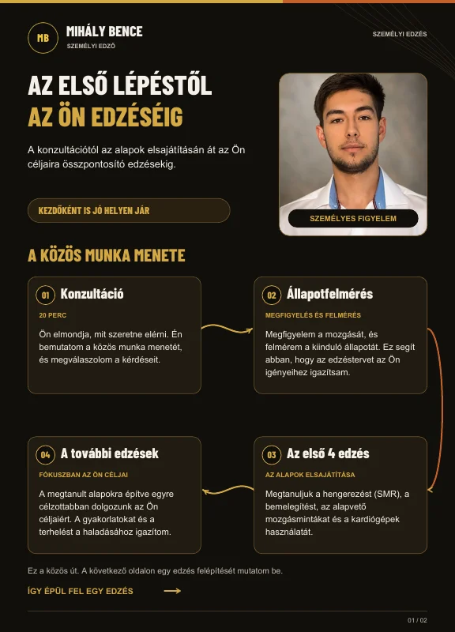
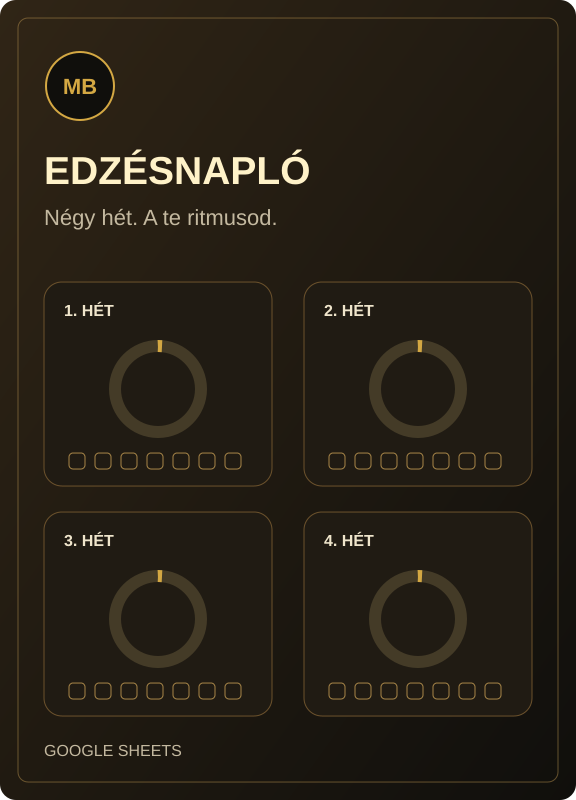

Fehérje
— g / nap
- kcal
- —
- %
- —
- g / kg
- —
- g / lb
- —
Ingyenes segédletek
Próbáld ki a makró- és BMI-kalkulátort, vagy olvasd el a személyi edzés útmutatóját. Ingyenes segítség a saját tempódhoz.
Megnézem az anyagokat ↓Makrókalkulátor
Add meg a testsúlyodat, majd válassz a lehetőségek közül. A szintentartó kalóriabecslés és a makrók azonnal frissülnek.
A célválasztás csak a fehérjét módosítja. A kalória szintentartó becslés marad, nem fogyási vagy tömegnövelési cél.
— g / nap
— g / nap
— g / nap
Add meg a testsúlyodat a becsléshez.
A megadott Macro-Calculator.xlsx szabályai alapján: testsúly (kg) × 30, majd a kiválasztott testalkat-korrekció; a kalória egészre kerekítve. 1 lb = 0,45359237 kg.
A fehérje a kiválasztott cél szerinti g/kg érték, a zsír 0,8 g/kg. A fennmaradó kalóriát szénhidrát tölti ki. A fehérje és a szénhidrát 4 kcal/g, a zsír 9 kcal/g; a százalékok az energiamegoszlást mutatják. A kijelzett értékek kerekítettek.
Ez egyszerű, egyéni beállításokra épülő becslés: nem veszi figyelembe az életkort, nemet vagy aktivitást. A testalkat-korrekciók nem mért anyagcsereértékek; a valós szintentartó szükséglet eltérhet.
Felnőttek tájékozódására szolgál, nem személyre szabott étrend. 18 év alatt, várandósság vagy szoptatás idején, illetve egészségi állapothoz kötött étrendhez kérj megfelelő szakmai segítséget. További tájékoztatás (NIDDK, angol) ↗
BMI-kalkulátor
Testsúly és magasság alapján számolt testtömegindex, azonnali eredménnyel.
—
Add meg a testsúlyodat és magasságodat a BMI kiszámításához.
Az érték egy tizedesre kerekített; a besorolás a kerekítés előtti értéken alapul. A skála 10–40 között mutatja a BMI-t.
BMI = testsúly (kg) / magasság (m)². Az angolszász adatok átváltása: 1 lb = 0,45359237 kg, 1 hüvelyk = 2,54 cm.
A skála általános felnőtt tartományokat mutat, nem diagnózist vagy személyes célsúlyt. Egyes etnikai háttérrel összefüggő egészségügyi kockázatok alacsonyabb BMI-nél is jelentkezhetnek; ez az egyszerű kalkulátor nem végez ilyen egyéni értékelést.
18 év alatt más értékelés szükséges. Várandósság, evészavar vagy annak gyanúja, illetve magasságot befolyásoló állapot esetén ne használd ezt a kalkulátort; kérj megfelelő szakmai segítséget.
Letölthető anyagok
Az útmutatót letöltheted, az edzésnaplóból pedig saját, szerkeszthető példányt készíthetsz. Mindkettő ingyenes.

Már elérhető · ingyenes
A konzultációtól az első edzéseken át egy teljes edzés felépítéséig. Rövid, képes útmutató, hogy tudd, mire számíthatsz, amikor együtt kezdünk dolgozni.
Regisztráció nélkül, bármikor elolvashatod.

Már elérhető · ingyenes
Tedd láthatóvá, amit hétről hétre beleteszel. Állítsd be a heti célodat, edzés után pipálj egyet, és kövesd a haladásodat a kördiagramokon. Külön gyakorlatnapló és kitöltési példa is segít az indulásban.
Megnyitás után válaszd a Fájl → Másolat készítése lehetőséget. A szerkeszthető példány a saját Google Drive-odba kerül; ehhez Google-fiók szükséges. A közös sablon csak olvasható.
A helyszínt és a készülődéshez szükséges tudnivalókat az első alkalom oldalán találod.
Mire számíts az első alkalmon? →